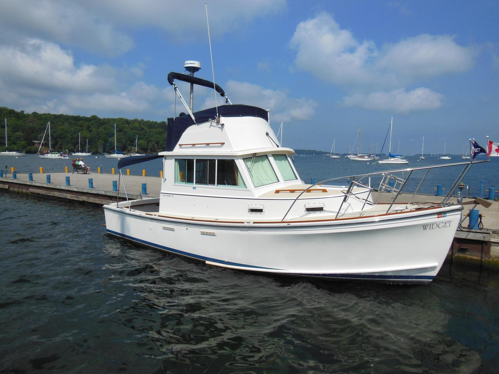

Cape Dory 28 Flybridge Cruiser Flybridge Cruiser
1985–1991
The Cape Dory 28 Flybridge Cruiser is the upper-helm version of Cape Dory’s 28-foot Downeast powerboat family. It uses the same full-keel semi-displacement hull as the Power Cruiser and Open Fisherman, adding a compact flybridge above the enclosed lower helm and salon. Most surviving examples are single-shaft boats, with both gasoline and diesel power appearing during production; diesel installations are especially common in the used market.

- Length
- 27.92 ft
- Beam
- 9.92 ft
- Draft
- 2.75 ft
- Hull behaviour
- Semi-Displacement
- Fuel
- Gasoline or Diesel
- Propulsion
- Shaft
- Engine configuration
- Single Inboard
- Boat family
- Trawler
- Construction
- Fiberglass; solid bottom with cored hull-side structures reported
Best for
- Couples wanting a compact traditional flybridge cruiser
- Great Loop, inland-waterway and protected coastal cruising
- Owners who value protected running gear and classic New England styling
Trade-offs
- Flybridge adds height, windage, ladder access and canvas/structure maintenance
- Compact machinery and accommodation spaces remain those of a narrow 28-footer
- Published displacement and water-capacity figures vary between factory-era and later technical references
- Single-engine propulsion lacks twin-engine redundancy
Known concerns
- No model-specific concern has been promoted to B-Atlas’s evidence threshold. This does not mean the model has no age-, condition- or hull-specific risks.
Inspection focus
- Confirm exact 28 configuration and model year from HIN and original documentation
- Moisture-test cabin sides, deck and cored hull-side areas around penetrations and previous repairs
- Inspect cabin windows, windshield frames and deck hardware for leakage history
- Inspect engine cooling, exhaust, mounts and tight service-access areas
- Inspect shaft, cutlass bearing, rudder, steering and full-keel running-gear protection
- Verify actual fuel, water, holding and air-draft figures because published specifications vary by year and configuration
Continue researching
Related boat models
30.25 ft · Planing / Modified-V
32.83 ft · Planing / Modified-V
27.92 ft · Semi-Displacement
27.92 ft · Semi-Displacement
35.75 ft · Planing / Modified-V
27.92 ft · Semi-Displacement
About this record
B-Atlas preserves uncertainty: missing information remains unknown rather than being treated as a negative. Specifications and guidance describe the model record; individual boats can differ by year, equipment, refit and condition.